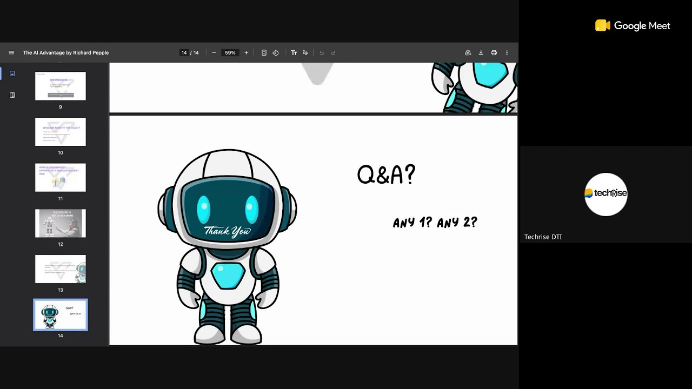

YouTube Webinar RecordingTHE AI ADVANTAGE - Who Will Benefit Most From Artificial Intelligence?
A transformative session exploring the real-world impact of Artificial Intelligence — who stands to gain the most, how African youth can leverage AI as a tool for economic advancement, and what skills matter in an AI-powered world.

TechRise DTI
Webinar Series